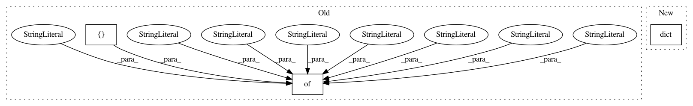

2255f7f623a88b730584bb1d2a0acdbafa0cdbc8,open_seq2seq/encoders/transformer_encoder.py,TransformerEncoder,get_optional_params,#,27
Before Change
included into the ``params`` parameter of the
class :meth:`__init__` method.
return {
"regularizer": None, // any valid TensorFlow regularizer
"regularizer_params": dict,
"initializer": None, // any valid TensorFlow initializer
"initializer_params": dict,
"encoder_layers": int,
"hidden_size": int,
"num_heads": int,
"attention_dropout": float,
"filter_size": int,
"src_vocab_size": int,
"relu_dropout": float,
"layer_postprocess_dropout": float,
"dtype": [tf.float32, tf.float16, "mixed"],
}
Transformer model encoder
def __init__(self, params, model, name="transformer_encoder", mode="train"):
super(TransformerEncoder, self).__init__(
params, model, name=name, mode=mode,
After Change
included into the ``params`` parameter of the
class :meth:`__init__` method.
return dict(Encoder.get_optional_params(), **{
"regularizer": None, // any valid TensorFlow regularizer
"regularizer_params": dict,
"initializer": None, // any valid TensorFlow initializer
"initializer_params": dict,
})
def __init__(self, params, model, name="transformer_encoder", mode="train"):
super(TransformerEncoder, self).__init__(
params, model, name=name, mode=mode,
In pattern: SUPERPATTERN
Frequency: 3
Non-data size: 3
Instances
Project Name: NVIDIA/OpenSeq2Seq
Commit Name: 2255f7f623a88b730584bb1d2a0acdbafa0cdbc8
Time: 2018-05-16
Author: okuchaiev@nvidia.com
File Name: open_seq2seq/encoders/transformer_encoder.py
Class Name: TransformerEncoder
Method Name: get_optional_params
Project Name: NVIDIA/OpenSeq2Seq
Commit Name: 2255f7f623a88b730584bb1d2a0acdbafa0cdbc8
Time: 2018-05-16
Author: okuchaiev@nvidia.com
File Name: open_seq2seq/decoders/transformer_decoder.py
Class Name: TransformerDecoder
Method Name: get_required_params
Project Name: NifTK/NiftyNet
Commit Name: 7714d8056e64d3f4fa8a4e07ab096a31e7047f55
Time: 2018-01-08
Author: rmaplue@ucl.ac.uk
File Name: niftynet/network/dense_vnet.py
Class Name: DenseVNet
Method Name: __init__